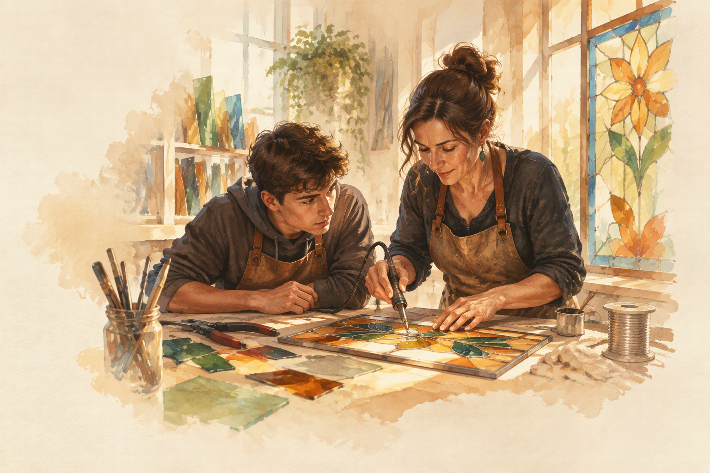
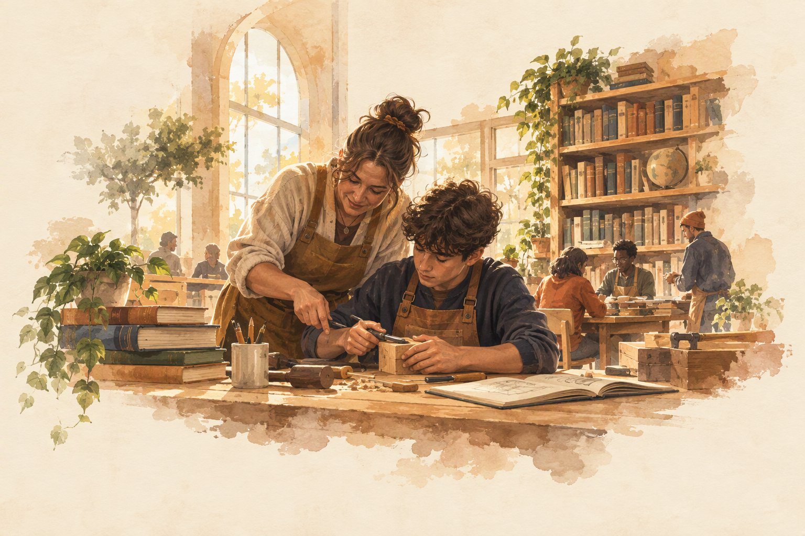
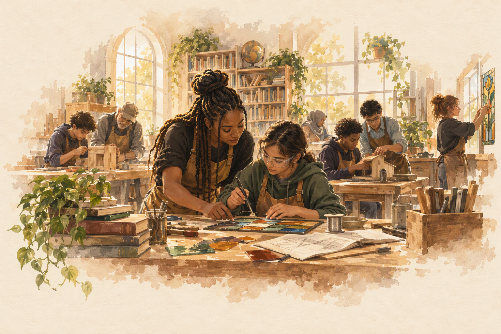

Skills live between people
Find a guide.
Become a guide.
Build practical connections with craftspeople who are willing to share experience and learners ready to begin.
Start a conversationThe right conversation can change everything
Experience is meant to be shared.
Our mentoring connections help experienced makers guide learners through real, hands-on challenges.
Mentorship can be as simple as a conversation, a shop visit, or a series of guided practice sessions.



For learners
Ask better questions.
Practice with purpose.
Find someone whose experience matches the skill you want to develop.
For the generous ones
Your experience
can open a door.
Being a mentor doesn’t mean having every answer. It means making room for questions, demonstrating real work, and helping another person build confidence.
Start with a conversation